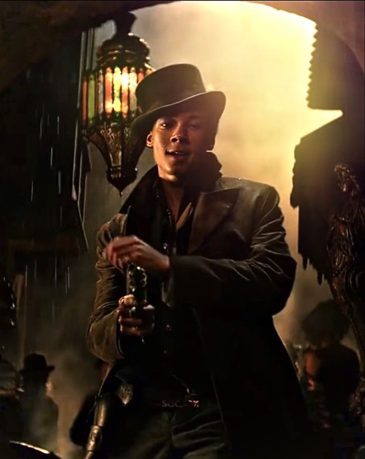
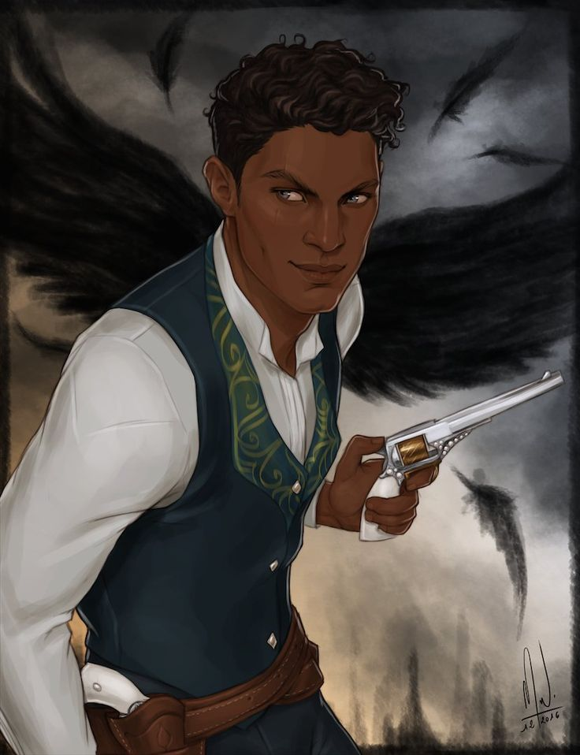
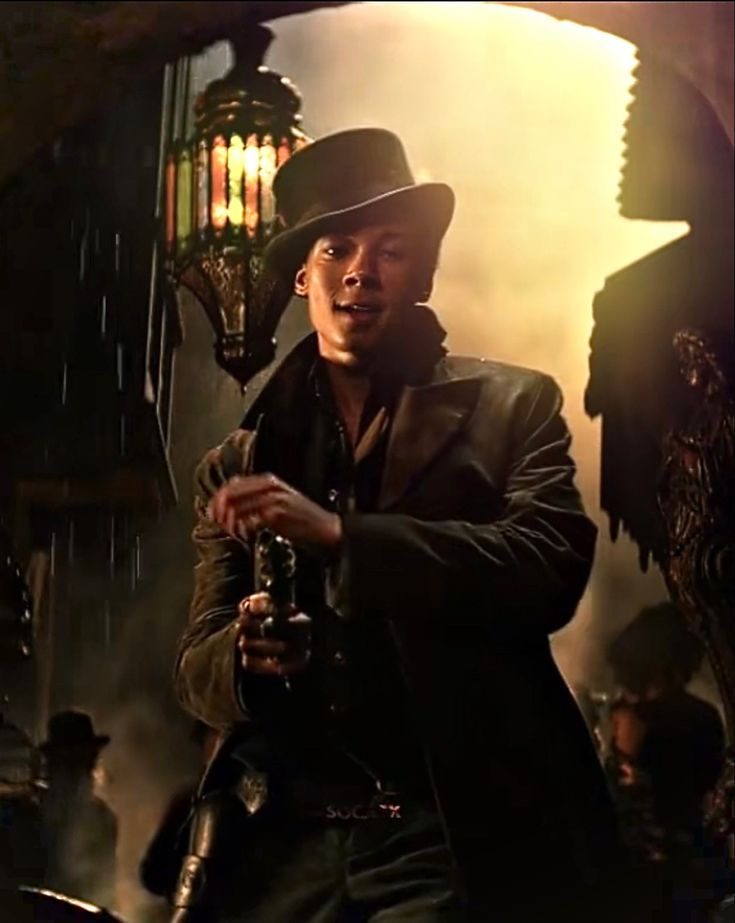
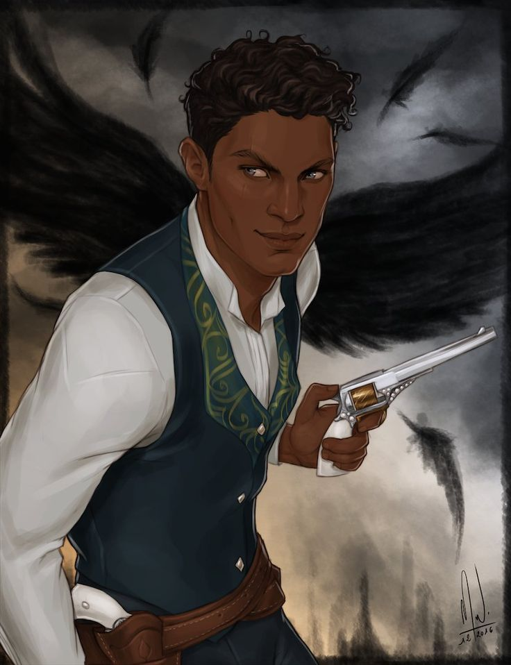
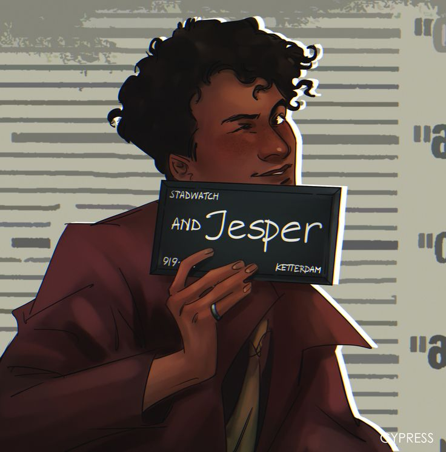
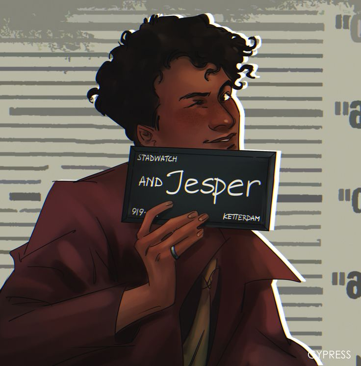
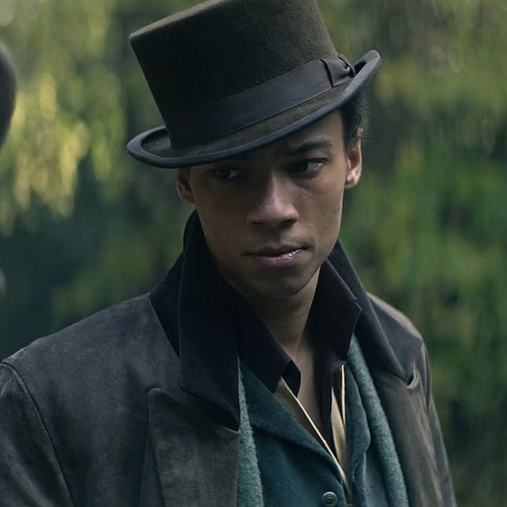
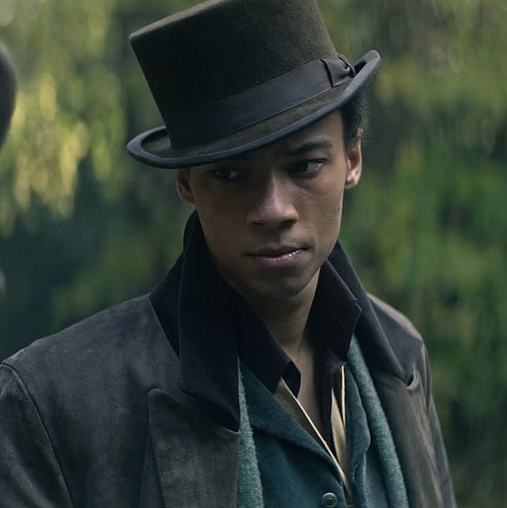

Джеспер Фахи
Стрелок, игрок и самый громкий смех команды
Джеспер Фахи — мастер стрельбы, азартный игрок и фабрикатор. Его харизма и юмор часто скрывают страх перед собственными способностями и зависимость от риска.

Биография
Джеспер вырос на ферме вместе со своим отцом-кэлийцем Колмом и матерью — Гришей Адити. Они все были очень близки. Его мать умерла после того, как использовала свою силу, чтобы спасти двух молодых девушек от яда. С тех пор отец приказал Джесперу никогда не использовать свою силу, чтобы предотвратить нечто подобное с ним.
Однако, когда Гриша не использует свои силы, они становятся «больными». Для Джеспера это означало, что внутри него накопилось бесконечное количество энергии, которая заставила его стать безрассудным и импульсивным.
Джеспер покинул свою родную страну Новый Зем, якобы для того, чтобы поступить в университет в Кеттердаме. Однако вскоре он пристрастился к азартным играм и залез в долги, чтобы поддержать свою зависимость. Он использует перестрелки и азартные игры, чтобы отвлечься от беспокойства, которые он чувствует, жаждая прилива адреналина.
Он присоединился к Отбросам вскоре после прибытия в Кеттердам, чтобы покрыть свои карточные долги, а также поддержать свою зависимость, и стал союзником и другом Каза Бреккера. В начале Продажного Королевства его отец все еще думает, что он учится в университете.
Читать подробнее
Джеспер долгое время скрывал свои способности фабрикатора, опасаясь разочаровать отца и столкнуться с последствиями магии. Его зависимость от азартных игр — отражение внутреннего конфликта между ответственностью и жаждой адреналина.
Характер
Джеспер — азартный игрок. Он остроумен и саркастичен, но дружелюбен, когда ему этого хочется. Хотя у Джеспера добрые намерения, временами он может быть слишком развязным. Он добродушен, самоуверен и любит поддразнивать окружающих.
Когда Джеспер чувствует себя подавленным, он кладет руки на пистолеты, чтобы не нервничать.
Из-за безрассудства, которое происходит от того, что он не использует свои способности Гриши, его импульсивность иногда приводит его к принятию плохих решений. Из-за этого он чувствует себя неудачником, и у него низкая самооценка.
На протяжении всей «шестерки Воронов» он влюблен в Уайлена Ван Эка, сына Яна Ван Эка.
Навыки и способности
Джеспер — Гриш, а точнее Фабрикатор, иначе известный как Прочник. В Новом Земе Гриша упоминается как зова, что означает «благословенный». Однако он не был обучен, поэтому его силы не были должным образом отточены и довольно слабы. А еще он талантливый и меткий стрелок. Уайлен считает, что причина, по которой Джеспер так хорошо стреляет, заключается в том, что он использует свои силы, чтобы направлять свои пули.
В «Шестерке Воронов» Джеспер использует свои силы, чтобы помочь Казу, Матиасу и Уайлену вырваться из своих камер в Ледяном дворе.
Интересные факты
- Джеспер — гриша, хотя долго это скрывает
- Он предпочитает яркую одежду и украшения
- Сильно привязан к Уайлену

 



 

 
